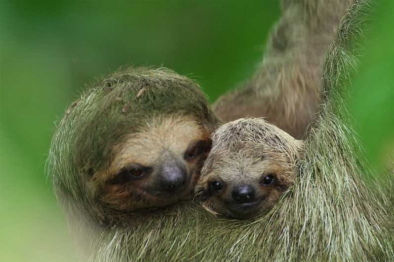

A lajhárok (Folivora) az emlősök osztályának (Mammalia), a vendégízületesek öregrendjének (Xenarthra), azon belül a szőrös vagy páncélozatlan vendégízületesek (Pilosa) rendjének egyik alrendje. A csoport megítélése korábbi rendszerekben (Brehm, Dudich-Loksa-féle állatrendszer, Urania Állatvilág) is hasonló volt, azzal a különbséggel, hogy a lajhárokat csak egy családnak tekintették, mivel a vendégízületesek csak egy rendet képviselt – a mai öregrendi szintje helyett.
A lajhárok legközelebbi ma élő rokonai a hangyászok (Vermilingua), ezekkel együtt alkotják a szőrös vendégízületesek rendjét. A ma élő lajhárok szinte csak maradványai az egykor nagyon alakgazdag csoportnak. A kihalt lajhárféléket a taxonómia több családba sorolja, amelyek között elefánt nagyságú, hatalmas növényevőket is találunk. A ma élő fajok jellegzetes fán lakó állatok, amelyek annyira szélsőségesen alkalmazkodtak ehhez az életmódhoz, hogy a földön szinte alig tudnak mozogni.
Életmódjuk
Fán élő, kizárólag levelekkel táplálkozó állatok, és kalóriaszegény étrendjüknek köszönhetően energiatakarékos életmódot választottak. Napi 9-10 órát[1] alszanak, és amikor ébren vannak, jellegzetes testtartással, fejjel lefelé haladnak az ágakon, kb. 400 m-t téve meg óránként. A földön – ahova egyébként nagyon ritkán mászik le, hetente talán egyszer, akkor is üríteni – 250 m/h-s sebességgel kúszik, viszont alkalmanként vízbe is merészkedik, ahol sokkal gyorsabban képes úszni. Testhőmérsékletük szokatlanul alacsony az emlősök körében (30-34 °C aktív életmód során, és még alacsonyabb alvás közben).
Zsákszerű gyomrukban baktériumok segítik a levelek emésztését, és a táplálék akár egy hónapot is elidőzhet a lajhár emésztőrendszerében.
A lajhár szőrébe beletelepszik egy algafajta, amely a száraz évszakban barna, az esős évszakban zöld, így beleolvad a környező mohába és lombokba, és olyan, mint egy termesz- vagy mókusfészek, vagy egyszerűen a fa része lenne.
A lajhár lassú életmódja miatt a lassúság szinonimájává vált a köznyelvben, gyakori inaktív életvitelük miatt régebben azt hitték róluk, hogy pusztán a „levegőből élnek”.
Rendszerezése
Az alrendbe 2 élő család és 6 élő faj tartozik:
A két élő család mellett, az alrendbe az alábbi 5 fosszilis család is tartozik:
Rendszertani besorolás
| Ország: |
Állatok (Animalia) |
| Törzs: |
Gerinchúrosok (Chordata) |
| Altörzs: |
Gerincesek (Vertebrata) |
| Főosztály: |
Négylábúak (Tetrapoda) |
| Osztály: |
Emlősök (Mammalia) |
| Alosztály: |
Elevenszülő emlősök (Theria) |
| Csoport: |
Eutheria |
| Alosztályág: |
Méhlepényesek (Placentalia) |
| Alosztályág: |
Vendégízületesek (Xenarthra) |
| Öregrend: |
Szőrös vendégízületesek (Pilosa) |
| Rend: |
Lajhárok (Folivora) |
További érdekességek